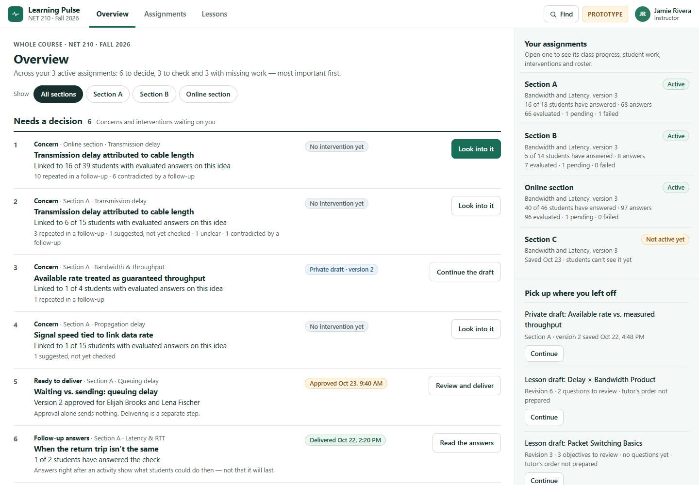
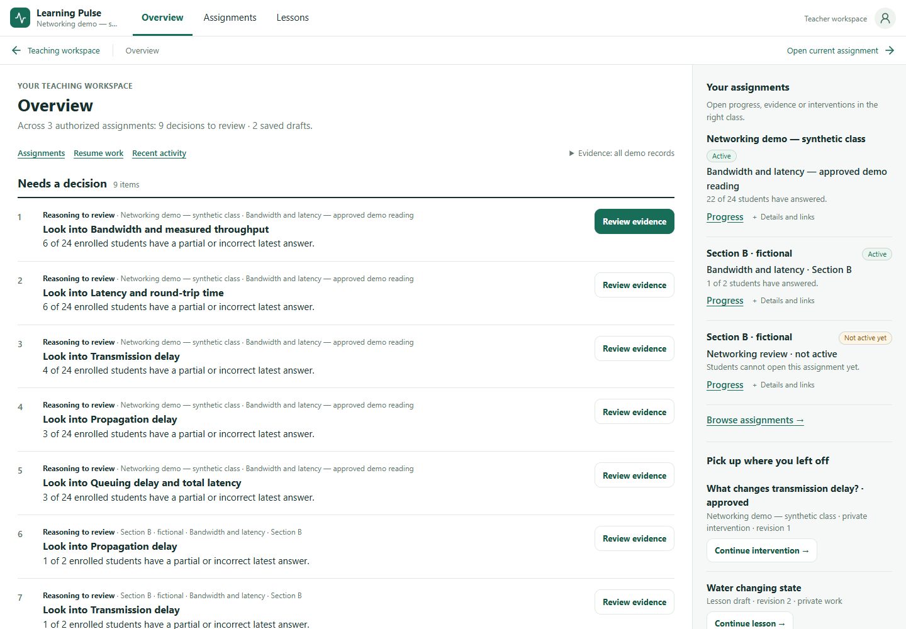
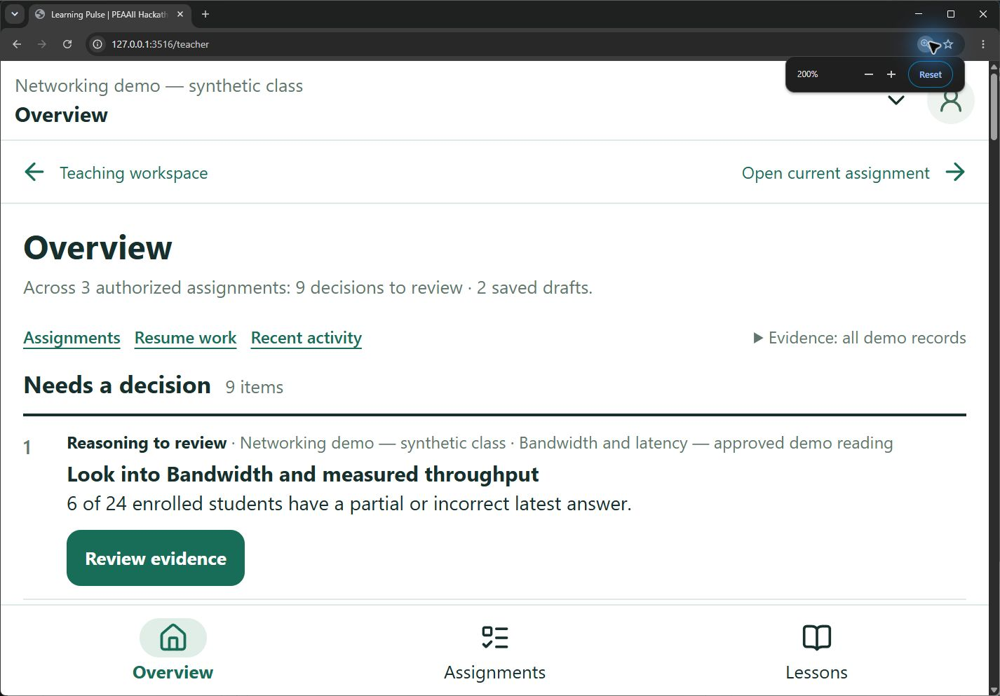

Agent F · 25 October 2026 · Draft integration evidence
The selected-assignment Teaching Desk is replaced with a teacher decision workspace across authorized assignments: evidence-backed review prompts, assignment rail, saved private work, recent responses, and contextual next actions. No shared shell, navigation, other workspace, schema, or permission service was changed.
Base: 07efb7f821339538800f150f57b298eb2e606be3; target branch
codex/workbench-v22-final-integration. Coordination:
#8,
#114; structural acceptance R04 and
PR #122 final visual report. This is not a claim that all prototype capabilities or the agentic
product are complete.
The actual supplied HTML, not a recreated mockup, was rendered at the same
four sizes. Main.dc.html SHA-256:
c853369da1250adf24a741a38c3d94d3c97a976c012c352732cf4dd8d924cb54. External Google fonts were blocked; local font fallback was used. The
PR #122 baseline screenshot was reviewed before implementation and is
preserved here.
Both populated states include active and inactive assignments, concerns in multiple classes, unfinished lesson/intervention work, approved-but-undelivered work, delivered work, unresolved evaluations, and missing answers. The application uses an isolated PostgreSQL database with fictional accounts and actual saved service records: 3 assignments across 2 classes, 9 decision rows, 3 concept evaluation-check rows, 2 missing-work rows, and 2 saved drafts. The prototype has 4 assignments across 4 sections (3 active), 6 decision rows and 4 resume entries. Counts, names, dates, concept duplication and long fixture labels are not evidence of a missing UI capability. No synthetic record is presented as live AI output.


Prototype actions exercised: concern evidence, private draft, delivery review, follow-up answers, unresolved evaluations, missing-work roster, active/inactive assignment, private intervention resume and lesson resume. See actual prototype results, application results and machine-readable matrix.
| Area | Prototype | Application | Assessment |
|---|---|---|---|
| Whole-workspace priorities | Whole course; 3 active assignments across 3 sections, plus 1 inactive. | All teacher-authorized assignments, including multiple owned classes. Selected assignment on return never narrows the Overview. | Structure implemented; teacher authority is narrower than the fictional course. Three application assignments vs four prototype assignments is a fixture difference. |
| Teaching decisions | Named concern hypotheses, repeated/contrary evidence, draft/delivery/follow-up status. | Existing teachingPriorities metrics, exact original response actions; separate approved and delivered workflow rows. Missing work stays separate from assessed reasoning. | Bounded deviation: concept-level review prompts and deterministic count ordering, not named pattern hypotheses or repeat/contrary ranking. No automatic link between a concept concern and a saved draft. |
| Assignment rail | Active/inactive assignments, participation, evaluation summaries; open assignment. | All authorized titles open their own review. Progress is direct; disclosure holds exact fixed version and Evidence/Interventions links. Inactive rows explicitly say students cannot open them. | Implemented navigation and status. Rail evaluation subtotals omitted to reduce density; checks remain in the main queue. Exact version is available without dominating the rail. |
| Available teaching work | Course navigation and resume pathways. | Prepare lesson, lesson library and assignment review links; jump links near the first decision. | Implemented. Available-work section is requested scope, not a literal extra panel in the supplied prototype Overview. |
| Resume lesson and intervention | Private intervention, two lesson drafts, and inactive assignment review. | Existing private intervention and unfinished current lesson versions resume exact saved identity/editor step; published current versions and dismissed/approved/delivered interventions excluded from unfinished list. | Implemented for saved server work. Number/titles of drafts differ by fixture. Inactive work is reviewed through the rail. Browser-only unsaved recovery is not indexed. |
| Recent activity | No distinct recent-activity section in this supplied Overview. | Five latest saved submitted answers across authorized assignments, exact response links and evidence origin. | Implemented requested extension. Not a teacher-action audit trail and not inferred student behavior. |
| Empty, loading, error | Empty priority group for a selected section; prototype has no real service failures. | Empty teacher and filtered evidence tested; foreign/missing assignment rejected; failed pinned record stays visible with counts excluded. Page-local loading and overall-unavailable fallback exist. | Empty and partial failure browser checks pass. Loading probe timed out before document commit; visible loading fallback remains unverified. Whole-database outage not tested. |
| Desktop organization | Decision list left, assignments and unfinished work right. | Same organization at 1440 and 1024. Shared shell unchanged. Repeated cautions consolidated; identifiers disclosed on demand. | Implemented structure, not pixel identity. Baseline shared breadcrumb/context band adds height; primary action still visible without scrolling. |
| Mobile and native zoom | Single column at compact widths; priority actions before lower rail. | Single column at 390 and 320; early Resume/Assignments/Activity jumps. Short-height spacing at real 200% keeps first action clear of fixed navigation. | Four viewport checks and native 200% pass. Native Chrome content viewport was 712×452 CSS px at DPR 2 (100% was 1424×905 at DPR 1). |
| Filtering and returns | Section filter chips; context-specific decisions and navigation. | Existing evidence-origin filter; all authorized assignments remain visible. Exact assignment/origin/attempt/session/evaluation and returnTo=desk on evidence links. | Section chips are a remaining interaction deviation, not a fixture difference. Agent K owns shared return behavior; browser Back/Forward/reload and generated contexts verified here. |
All four requested sizes have no horizontal overflow. The complete first decision action is above fixed navigation without scrolling. Desktop review led only to consolidation of repeated cautions, disclosure of exact version identifiers, and reduced rail repetition. Short-height spacing was then adjusted after native zoom exposed a partially covered first action.
| Viewport | First action bottom | Document width | Real captures |
|---|---|---|---|
| 1440×1000 | 371.8px | 1440px | App · full page · Prototype |
| 1024×768 | 446.7px | 1024px | App · full page · Prototype |
| 390×844 | 519.0px | 390px | App · full page · Prototype |
| 320×844 | 537.0px | 320px | App · full page · Prototype |
Measured viewport results. Native 200%: fresh
Chrome profile, newly verified origin http://127.0.0.1:3516,
HTTP response + unique debugging target + visible address bar
independently checked. Ctrl+0 followed by five Ctrl+numpad-plus shortcuts;
Chrome displayed 200%, DPR doubled from 1 to 2. No CSS zoom, simulated
page scaling, or reuse of the earlier uncertain Edge session. Final first
action ends at 374.5px; fixed navigation starts at 387.5px.
Origin evidence ·
measurements ·
page capture ·
full page.

Production application navigation used real local authentication and database records, without model calls. Tests verify assignment review and inactive status, exact original response targets, second-class progress/evidence, private draft resume, approved/delivered draft identities, recent activity, origin filters, browser Back/Forward/reload, mobile jump links, keyboard reachability, foreign/missing assignment rejection, empty teacher and partial missing-record handling. The interaction log records each check. No browser write request occurred after sign-in; before/after hashes of nine evidence/workflow tables match. A temporary invalid pinned-record fixture was restored in a finally block.
Browser checks and table hashes · empty teacher · empty filtered evidence · missing record · partial failure · keyboard focus · mobile resume.
Unverified: the real loading probe blocked document commit for 30 seconds, so no visible loading fallback could be established. The temporary lock was rolled back; subsequent checks verify recovery. The page-local fallback exists in source. See exact failed probe. A whole-database outage, physical phones and screen-reader testing were not performed.
Required checks: 26 focused/related tests passed; repository lint,
TypeScript, formatting and production webpack build passed (logs linked
below). The production build reports the existing
lib/materials/extract.ts module.createRequire failed parsing
argument
warning. An earlier harness launch with Node's
--env-file failed because the spawned Next worker rejected
that inherited option; normal Next environment loading succeeded. That
failed launch is retained as
evidence.
node --experimental-strip-types --conditions=react-server --test app/teacher/overview/overview.test.ts tests/teacher-priorities.test.ts tests/teacher-shell-metadata.test.ts tests/teacher-workspace-contracts.test.ts tests/teacher-progress-return.test.ts node node_modules/eslint/bin/eslint.js . --max-warnings=0 node node_modules/next/dist/bin/next typegen node node_modules/typescript/bin/tsc --noEmit node node_modules/prettier/bin/prettier.cjs --check . node node_modules/next/dist/bin/next build --webpack python content/network-performance-v1/verify_package.py
Test log · lint log · TypeScript log · format log · build log · content check · exit codes and commands. Webpack is explicit because the local dependency directory is a junction outside this worktree. No dependency/configuration change is included.
Review and explicitly accept these bounded deviations before calling complete prototype parity. No request to waive authorization or fabricate data is needed.
All changed paths belong to Agent F: app/teacher/page.tsx and
app/teacher/overview/**. No migrations or new environment
variables are required for application deployment. Review this draft
against codex/workbench-v22-final-integration at the stated
common SHA. Integrate the F commit as a unit, preserving other agents'
routes and shared return work; rerun Overview navigation after Agent K's
changes. Do not close #8/#114 or treat unrelated agentic acceptance as
complete.
Browser harnesses are included under this verification folder:
viewport-check.mjs, interaction-check.mjs,
prototype-check.mjs, native-measure.mjs. Run
from repository root with a separate fictional database named
overview_f and the application at port 3516. Set
PLAYWRIGHT_PACKAGE to an existing Playwright package.json
path, BROWSER_EXECUTABLE to an installed browser, and supply
fictional DEMO_TEACHER_EMAIL/PASSWORD and
EMPTY_TEACHER_EMAIL/PASSWORD privately.
fixture.json records the scenario identities; recreate
equivalent owned data and update those IDs for another isolated database.
No credentials or database dump are included. The interaction harness
deliberately changes and restores one inactive fixture's pinned record; it
is guarded to the isolated database name.
node --env-file=.env app/teacher/overview/verification/viewport-check.mjs node --experimental-strip-types --conditions=react-server --env-file=.env app/teacher/overview/verification/interaction-check.mjs node app/teacher/overview/verification/prototype-check.mjs # Native measurement requires a separately verified, fresh Chrome test target on port 9516 # and actual native zoom input; the script measures, it does not set zoom. node app/teacher/overview/verification/native-measure.mjs
The app test uses fictional seed records and saved synthetic evaluations through existing services. It proves read behavior and navigation, not model quality or live agentic behavior. No paid calls were made.